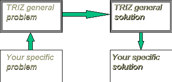
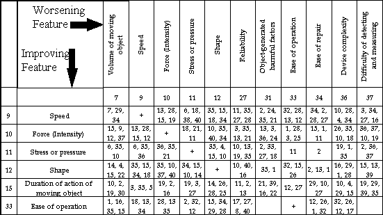

Ellen Domb, Ph.D.
The TRIZ Institute, 190 N. Mountain Ave., Upland, CA 91786 USA
(909)949-0857 FAX (909)949-2968 e-mail ellendomb@compuserve.com
Introduction: A basic principle of TRIZ is that a technical problem is defined
by contradictions. That is, if there are no contradictions, there are no problems. This
radical-sounding statement forms the basis for the TRIZ problem solving methods that are
fastest and easiest to learn. This session will combine a tutorial workshop on how to
identify contradictions and use them to solve problems with examples drawn from the
automotive industry, with particular emphasis on the air bag system, subsystems, and
components. Appendix 1 to this paper is the Contradiction Matrix, which is used to
determine which principles have the highest probability of solving a particular problem.
Appendix 2 to this paper lists the 40 Principles for Problem Solving, with general
examples and examples from the industry..
The benefit of analyzing a particular innovative problem to find the contradictions is
that the TRIZ patent-based research directly links the type of contradiction to the most
probable principles for solution of that problem. In other words, the general TRIZ model
of Fig. 1. is particularly easy to apply for contradictions.

Figure 1. The General Model for Problem Solving with
TRIZ
Contradictions:
TRIZ defines two kinds of contradictions, "Physical" and
"Technical". These labels are artefacts of the early translations of TRIZ works,
and should be thought of as reference labels-neither is more or less "physical"
than the other!
Definitions:
Technical contradictions are the classical engineering "trade-offs." The desired state can't be reached because something else in the system prevents it. In other words, when something gets better, something else gets worse. Classical examples include
Automotive examples are easy to construct:
Air bag examples of technical contradictions are found in the technology and in the
social problems that surround the entire passenger protection situation. Examples:
Examples of technical contradictions can be constructed for every system, subsystem,
and component of the automobile, the air bag, and the entire highway transportation
system.
Physical Contradictions are situations where one object has contradictory, opposite requirements. Everyday examples abound:
Automotive industry examples come from both design, production, and implementation:
Air bag examples are found throughout the system and subsystems:
As in the case of the air bag deployment threshold, many problems can be stated as both
physical and technical contradictions. When using the TRIZ research findings, in general
the most comprehensive solutions come from using the physical contradiction formulation,
and the most prescriptive solutions come from using the technical contradiction. In terms
of learning, people usually learn to solve technical contradictions first, since the
method is very concrete, then learn to solve physical contradictions, then learn to use
both methods interchangeably, depending on the problem.
Resolving Technical Contradictions:
The TRIZ patent research classified 39 features for technical contradictions. Once a
contradiction is expressed in the technical contradiction form (the trade-off) the
next step is locate the features in the Contradiction Matrix. See Appendix 1 for the
complete matrix, and see Figure 2, below, for an extract.

Figure 2. Selected rows and columns from the Contradiction Matrix.
The numbers in the cell refer to the principles that have the highest probability of
resolving the contradiction. See Appendix 1 for the complete matrix. and Appendix 2 for
the 40 principles The circled cell is discussed in the example in the text.
Find the row that most closely matches the feature or parameter you are improving in
your "trade-off" and the column that most closely matches the feature or
parameter that degrades. The cell at the intersection of that row and column will have
several numbers. These are the identifying numbers for the Principles of Invention that
are most likely, based on the TRIZ research, to solve the problem: that is, to lead to a breakthrough
solution instead of a trade-off.
For example, consider the proposal to change the speed of inflation of the air bag, to
reduce injuries to small occupants. The trade-off is that injuries in high speed accidents
increase. Translating this into the TRIZ matrix terms, the parameter that improves is
"Duration of action of a moving object" (Row 15) and the parameter that worsens
is "Object-generated harmful effects" (Column 31). The cell at the intersection
has the notation "21,39,16,22" which are the identifiers for four of the
Principles of Invention. Figure 3. shows the same analysis, as presented by the Principles
module of The Invention Machine Laboratory 2.11 software.
The 40 Principles of Invention are listed in Appendix 2, with examples of the application of each in various areas of every-day life, technology, and the automobile industry. Some TRIZ practitioners follow the guidance of the Contradiction Matrix to select which principles to apply to a specific problem. Others try each of the principles for every problem, rather than depend on the "most probable."
Figure 3. The opening page of the Principles module of the Invention
Machine Laboratory 2.11 software, showing the identification of the inventive principles
most likely to resolve the conflict between the improving feature and the worsening
feature identified in the boxes on the left side of the screen.
To illustrate the use of the 40 Principles, consider the recommendation that Principles 21,39, 16, and 22 are good starting points for this situation. Starting with the 4 recommended principles, read each, consider the examples, construct analogies between the examples and your situation, then create solutions to your problem that build directly on the concept of the principle and the analogies to the examples. Air bag and automotive examples are marked ""
A. Conduct a process , or certain stages (e.g. destructible, harmful or hazardous operations) at high speed.
Inflate the air bag faster than current practice, so that it is fully inflated when the small person impacts it.
A. Replace a normal environment with an inert one.
B. Add neutral parts, or inert additives to an object.
What does the damage is the encounter between the person and the air bag, before it is fully inflated. The bag acts "hard" because of its motion. So something that would "soften" the surface would be the equivalent of an "inert" material-it does not prevent the original purpose (inflate the bag and protect the person from hitting solid objects) but it cushions the blow from the bag itself. How can this be implemented? Change the structure of the bag-make it corrugated, or make it of filaments, or use multiple crushable layers. Change the "hardness" without changing the structure (this is the 2-stage inflation that has already been proposed.)
A. If 100 percent of an object is hard to achieve using a given solution method then, by using 'slightly less' or 'slightly more' of the same method, the problem may be considerably easier to solve.
The de-powered air bag has been proposed as a solution of this type. By using less power, the acceleration of the bag is less, and injuries will be reduced.
Conversely, smaller bags with higher power would reach full inflation sooner, so that the passenger would be protected from the accident and not injured by the air bag.
A. Use harmful factors (particularly, harmful effects of the environment or surroundings) to achieve a positive effect.
Use the relative motion of the person and the vehicle as part of the
protection. Design other parts of the system (seat, dash, side panels) to redirect the
moving person to be properly placed for best air-bag protection.
B. Eliminate the primary harmful action by adding it to another harmful action to resolve the problem.
C. Amplify a harmful factor to such a degree that it is no longer harmful.
This again suggests inflating the air bag faster, so that it is no longer harmful by
the time the person reaches it.
If the problem is better expressed as a physical contradiction (where one
parameter has opposite requirements) rather than a technical contradiction then the
Contradiction Matrix won't work-it has no entries on the diagonal, so you can't look for
"X gets better but X gets worse."
TRIZ has 4 classical ways to resolve physical contradictions
Solid - liquid - gas - plasma
Paramagnetic -Ferromagnetic
Others-ferroelectric, superconducting, crystal structure, …
Examination of the 40 Principles shows extensive overlap with these 4 methods, since
they are based on the same research on the same collection of innovative solutions to a
wide variety of problems. For example, one dominant physical contraction for the air bag
system is
The deployment threshold should be high but it should be low
(For non-air bag industry readers: the deployment threshold is the speed of the car
that is required for the air bag to fire. Many air bag injuries happen in low-speed
accidents, where the people would not have been severely injured by the accident itself.
The higher the threshold, the fewer times air bags will be used, so the less chance of
injury from the air bag itself. But, the higher the threshold, the more damage is done by
the accident, and the more useful the air bag is for protecting the people.)
Since this is a contradiction, the answer will not be a number-that would be the
non-TRIZ way of doing a trade-off. Applying the 4 methods for resolving a physical
contradiction will cause us to deal with the cause of the problem (air bags cause
injuries) and not just with the short-term solution (changing the speed of deployment.)
Applying the first of the 4 ways to resolve the contradiction, separate the
requirements in space. This leads to ideas like using a low deployment threshold for a
belted, average sized or above driver, and a high deployment threshold for a small driver
or unbelted passenger, addressing just the ways to resolve the deployment threshold
problem. It introduces problems of sensor and logic complexity, so that the car
"knows" where to set the threshold, so it is not a very good solution in terms
of ideality. Addressing the more general problem, the popular solutions are already known:
put children in the back seat (separate them in space from the air bag) and have drivers
sit as far as possible from the steering column (using pedal extenders, special seats,
etc.) But it could also lead us to look in detail at the space where the problem
occurs. Could the shape of the airbag be changed so that it is fully deployed when the
short person reaches it? And still protect the average and large person?
Separation in time suggests examining the sequence of events in an accident to
see if different kinds of accidents require different deployments, rather than using the
velocity at the time of impact as the triggering factor. This has considerable overlap
with the idea of solving the problem at the super-system level, since it changes the
problem from one of how to set the threshold, to examination of whether the threshold is
the right parameter to use at all.
Phase transition appears unlikely to help in this case, but should not be rejected immediately. Consider the physical state of everything that does harm in the scenario.
For example, one form of injury is caused when short drivers sit close to the steering
column. The bag is still accelerating when the person strikes it, instead of fully
inflated as it would be for average height drivers. The acceleration of the bag has been
blamed for face and neck injuries. Could the acceleration that harms people be moderated
by using some other material? This leads us to challenge the entire problem-should it be a
foam bag instead of an air bag? Or a liquid barrier? Or a magnetic field (much faster to
deploy than a mechanical device, but will people wear a magnetic protection vest if they
won't wear seat belts? At least it would protect belt-wearing short drivers)
Change the problem: use the super-system or the subsystem: The air bag industry
has done a lot already with this approach. The 30% de-powered air bag concept attempts to
mitigate the injuries by using lower power inflation, so that the acceleration of the air
bag will be lower, causing less injury to the person who strikes it, while still inflating
with enough power to protect the person from injury in the accident. The ultimate
super-system approach is to prevent accidents and eliminate the need for the air bag.
There is a fifth way to resolve a physical contradiction: convert it to a technical
contradiction. The conversion may be obvious or subtle: the most useful technique is to
separate the element s of the contradiction and ask "WHY?"
For example, continuing with the high/low deployment threshold contradiction:
Why must it be high? To avoid deployment in low-speed accidents and prevent air bag-caused injuries
Why must it be low? To protect people in accidents at any speed
This leads us to the technical contradiction
As speed of the car increases, injuries to occupants become worse
This is not just circular logic: it focuses us on the root cause of the problem,
protection of people in automobile accidents, and makes it very clear that changing the
deployment threshold is only a "band-aid" solution the problem of harm done by
air bags. This is why resolving the physical contradiction is regarded as a more general
solution than resolving the technical contradiction. TRIZ does not generate breakthrough
solutions by "better brainstorming" or by teaching people to "think
creatively." In dealing with contradictions TRIZ generates breakthrough solutions by
giving you the tools to find the problem behind the problem, and remove it.
TRIZ References
Technical articles and tutorials
http://www.triz-journal.com
Books:
Breakthrough Press 916-974-7755 or BRKTHRU@bythewaybooks.com
Creativity as an Exact Science (text) by G. Altshuller $134
And Suddenly the Inventor Appeared (stories) by G. Altshuller,
translated by Lev Shulyak $40
Collections of papers by James Kowalick and Ellen Domb
GOAL/QPC 800-643-4316 or Service @ GOAL.COM
TRIZ: An approach to Systematic Innovation (report) $20
Victor Fey and Eugene Rivin: The Science of Innovation: A Managerial Overview of
the TRIZ Methodology. $27. The TRIZ Group 810-433-3075. TRIZGR@aol.com
John Terninko, Alla Zusman, and Boris Zlotin: Step-by-step TRIZ: Creative
Solutions to Innovative Problems. $40. Responsible Management (603) 659-5186.
john@terninko.com
Conference Proceedings:
Total Product Development 1995, 1996. American Supplier Institute, (800)462-4500 or
ASI@amsup.com
Quality Function Deployment Symposium 1996, 1997 and Quality Function Deployment
Symposium Tutorials 1995, 1996, 1997. Quality Function Deployment Institute, (313)
995-0847 or QFDI@quality.org
Software:
The Invention Machine
800-595-5500 or http://www.invention-machine.com